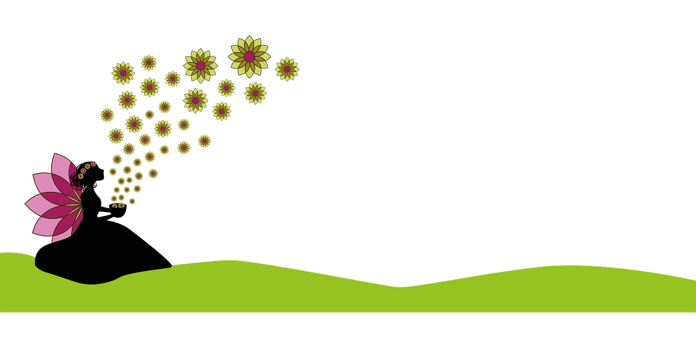

״המרכיב הבא הוא חול לבן מהצוק אלבינדס״ אמרה נטע ״מהצוק אלבינדס! זה הצוק הכי תלול בעולם הפיות! והכי מסוכן!״אמרה נילי בבעתה ״ועוד חול מהקצה שלו!״ הצטרפה גם אדווה לדאגה ״האהם האהם״ אמרה ליבי ״בשביל מה אנחנו פיות קסומות?״ ״צודקת״ אמרתי "אני יכך עלה כדי שיחזיק את החול״ ״אני יעשה לחץ כדי שיהיה סילון והעלה יתוס״ מיה פיית הלחץ אמרה ״אני יתכווץ בעזרת המדע החדש והנווט את העלה״ אמרה נגה פיית המדע ״ומי לא צריך לסילון אש.״ אמרה נטע פיית האש ״ואני יעשה שביל מים״ אמרה סיון פיית המים ״ואני יקפיא את שביל המים לקרח כדי שיהיה יציב״ הצטרפה נילי פיית הקרח ״ותוךךךך העבודהההה קצת מוזיקהההה״ זימרה אדווה פיית המוזיקה ״וכוכבים יתאימו למוזיקה!״ אמרה ליבי פיית הכוכבים באושר. ״כוח קסום חבר כוחות ותעשה את מה שאנו רוצות״ זימרנו יחד ופוף עלה, סילון, אש, שביל מים קפוא, מוזיקה, כוכבים מרצדים וקיבוץ פיה ואחרי דקה הקופסה הייתה מלאה בחול לבן בוהק ״כל הכבוד נגה אל האומץ״ ״על לא דבר״ אמרה נגה שישבה על ידי, זאת הייתה הרגשה מוזרה.  ״קדימה למרכיב הבא!״ אמרתי.